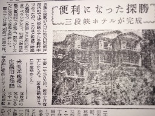
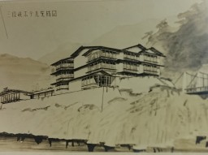
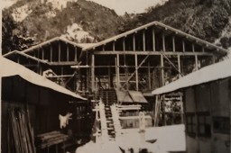

|
三段峡ホテルの歴史と名前の由来 三段峡ホテルの歴史と名前の由来 |
|
|
三段峡ホテルの歴史と名前の由来 昭和４年、先代の創業者高下常市が三段峡入口に旅館を建てたのが「峡南館」という旅館。昭和７年には広島の大富豪、羽田氏が三段峡に進出し「峡南館」を吸収合併し「羽田別荘」を建設し高下常市は羽田別荘三段峡出張所総支配人となる。戦時中昭和１８年には陸軍に接収され広島陸軍病院三段峡療養所となり管理人に任命される常市３８歳の時である。昭和２０年の終戦後は「羽田別荘」は今度は進駐軍に接収され、そこでも管理人をしていた。 高下常市は尋常小学校の時父親を赤痢で亡くし５人兄弟姉妹を長男として面倒を見なければならなかったので尋常小学校を中退して働かなければならなかった。よく字も書けない、ましてや英語チンプンカンである。進駐軍は「羽田別荘」のことをホテル、ホテルとよんでいた。常市はこういう旅館をホテルと呼ぶのかと理解した。 昭和２０年８月原爆が広島に落とされた。羽田さんも庭だけ残ってすべて焼き尽くされた。家を再建しようにも木材がない、そこで「羽田別荘」を解体して土台のみ残しすべて広島に運んで引き上げた。 昭和３０年樽床ダムができるのに伴って保証金が入る。「羽田別荘」の跡に「三段峡ホテル」を新築１０月１７日着工昭和３１年完成。常市は最もモダンな名と考え三段峡ホテルと命名した。その時の中国中国新聞に「便利になった探勝 三段峡ホテル完成」とある。その当時にはホテルという名は旅館でもホテルでもなかった。広島で初めてホテルという名がついた建物であった。
現在、変化に富み神秘的で新緑と紅葉の美しい景勝地として有名な三段峡は、大正中頃まで一部の人しか知られていなく、この秘境を日本有数の名勝地に育てた最大の功労者は、熊南峰である。大正６（１９１７）年に竜の口、三段滝にであって以来、三段峡の織りなす自然美にみいられその姿を写真に撮り続け、写真を通じてこの三段峡の魅力を紹介するとともに、この景勝地の自然美を永遠に保つために「史蹟名勝天然紀念物保存法」の指定を受ける運動をおこすとともに、南峰は勤務地の広島市の写真館に帰ることなくこの地に滞在し、-毎日のように峡中の調査をつづけ、名勝地指定に必要な書類の作成に取り組み、また多くの人が歩けるように道をつけ、宿泊設備の建設を働きかけた。こうした努力によって大正１４年１０月８日、三段峡は名勝地指定を受けることに成功しました。 高下常市は大正６年熊南峰を当時俗称悪谷と言っていたが正式名もないこの渓谷(三段峡と名付けたのは熊南峰)を案内したことをきっかけに氏に心酔し南峰にほれ込みついていった。大正８年には黒渕に渡し舟をすることを勧められ洞穴に住み込んで筏を作って渡し舟を始めた。大正１５年に黒渕荘を新設し妻ハルノをめとり二人だけで旅館業を始める。 熊南峰は、三段峡を癒しの場とし、奢多を嫌い、地元で採れる食材を用いるこそがおもてなしであると説いた。 三段峡ホテルは氏の教えを代々に伝えていきます。 |
| 昭和３１年に中国新聞に載った記事 |  |
| 三段峡ホテル完成予想図 |  |
| 建設中の三段峡ホテル 当時はホテル前に製材所をつくって裏の木を切り加工した |
 |